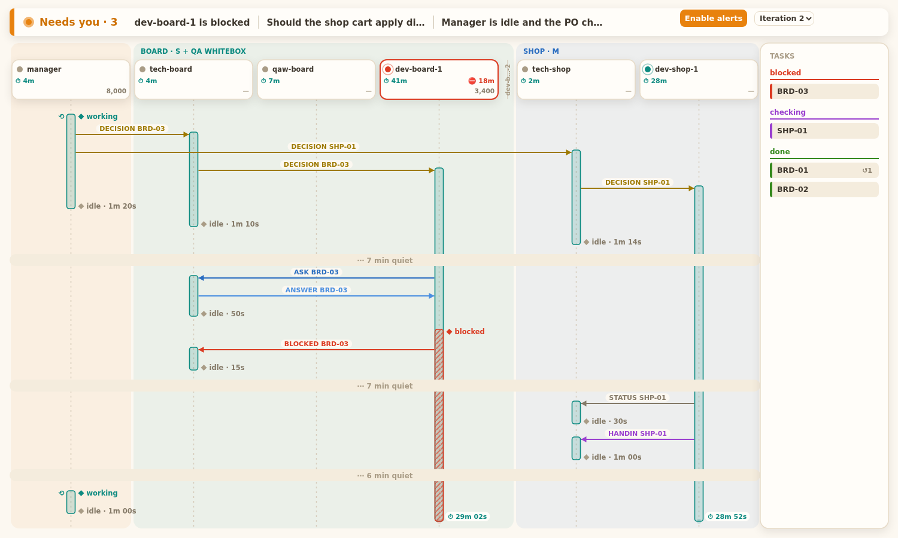
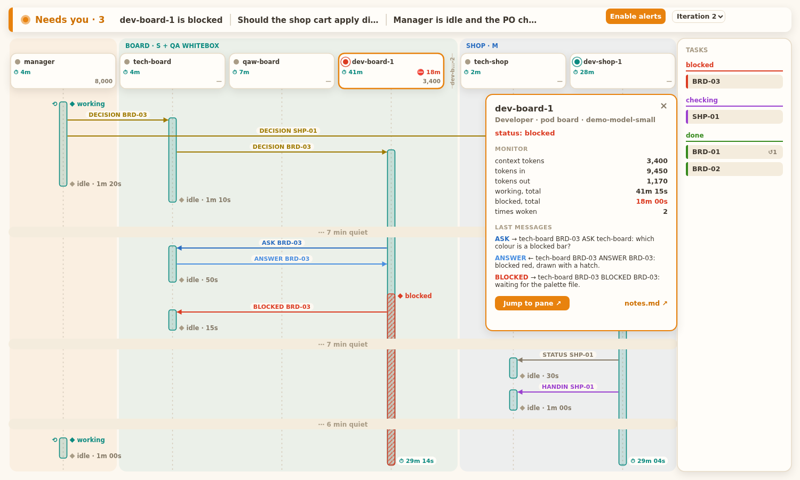
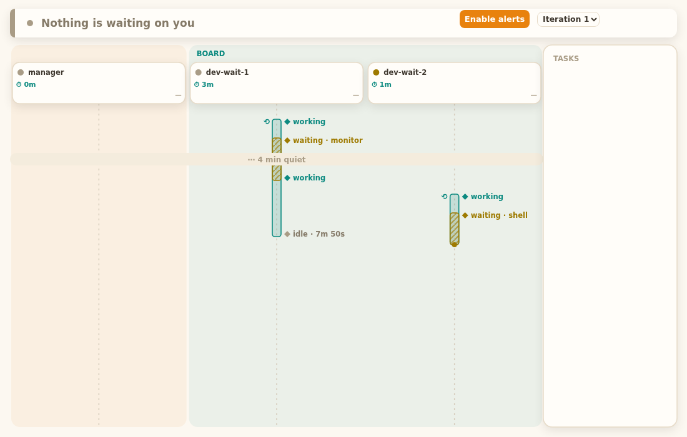

1. What does each part of the board mean?
SpaceTime runs downward, one column per agent. Hover a pin (or its note) and the other lights up.

--replay). Timers on open bars keep counting. verified screenshot of the real page.- Needs-you bar: what waits on you.
A blocked agent, an unanswered escalation, or an idle Manager with an empty PO check-in; else “Nothing is waiting on you”. Enable alerts: each new item then rings a chime and a notification, and the tab title shows
(3) squad board. bin/squad-board:698 derive_needs_you · bin/squad-board.html:1353, 1425verified - Iteration picker: look at an earlier round.
The newest iteration is live. An older one shows a “Replay of iteration N” banner and stops following;
↓ livecomes back. bin/squad-board.html:1023, 975verified - Header card: one per rostered agent. Dot = status. ⏱ teal = working total (blocked time included), ⛔ red = blocked total, right number = context tokens. Red outline = blocked; orange = panel open. Click it for the panel (below). bin/squad-board.html:324, 431-474verified
- Teal bar: the agent was working.
It starts where a message woke the agent, so cause and effect line up; it ends when the agent goes idle (
◆ idle · 1m 20sis how long it ran). ⟲ on the left: nothing woke it (you typed to it). bin/squad-board.html:626 · bin/squad-board:464 cut_unrecordedverified - Arrow: one message, sender to receiver. The label is the type and the task; the colour is the type (card “Arrow colours” below). bin/squad-board.html:495 TYPE_COLOURverified
- Red hatched part: blocked in that stretch. The agent is also on the needs-you bar. A yellow hatched part means waiting on a background job (question 2). bin/squad-board.html:633verified
- “7 min quiet”: nothing happened here. A quiet stretch over 3 minutes between two rows folds into one line, so the page stays short. bin/squad-board:369 FOLD_GAP_S = 180verified
- Tasks card: every task seen in messages. Grouped blocked, building, checking, returned, done. The state comes from the last message type (card “Tasks” below). bin/squad-board:619 TASK_STATE_FOR_TYPE · html:789verified
Reference cards: what the pins do not reach
Arrow colours
An arrow whose two ends are the same column loops out to the right.
bin/squad-board.html:495 verifiedTasks: message → state
| DECISION, STATUS | building |
| HANDIN | checking |
| FAIL | returned |
| PASS | done |
| BLOCKED | blocked |
ASK and ANSWER only make a task appear (as building) when they name it first. ↺2 on a chip = it came back twice; from 2 up its pill gets an orange fill. A late STATUS does not reopen a done task; HANDIN, FAIL and BLOCKED do. Too many tasks end in +N more.
Bars: the small marks
- Pulsing dot +
⏱ 4m 05s: open bar, still working, live timer. - Steady yellow dot, no timer: open and waiting.
- Thin rotated name: a retired agent with nothing in this iteration, folded to a stub.
- Pod band: orange and unlabelled is the Manager's pod; others take teal, blue, purple, pink, green, yellow in turn, labelled with pod name and size.
- Totals read
7m,1h05; a long name keeps its number:dev-bo…-10.
Follow live
At the bottom of the page the board follows: new rows scroll into view. Scroll up and it pauses: a ↓ live · N button counts the rows that arrived meanwhile; click it to follow again.
Long messages, and the token
The page carries the first 140 characters of a message, ending in …, with show more. It fetches the full text (needs the token); show less folds it back. A failed fetch says “full text not available” and the button reads show more again: one click retries.

The side panel (one agent, close up)
- Who and in what state.Name, role, pod, model, and the status line.bin/squad-board.html:1062-1075verified
- MONITOR: the numbers.Context tokens, tokens in and out, working total, blocked total, times woken; a
waitingtotal only when above zero. Raw tokens, no context %.bin/squad-board.html:1066-1075, 1292verified - The last three messagesthe agent sent or received in the iteration you are viewing; long ones fold (card above).bin/squad-board.html:1083verified
- Jump to pane ↗ and notes.md ↗.Jump focuses that agent's herdr pane. It is disabled for retired agents and without the token (“Jump needs the token”). It is the only action that changes anything; it moves focus and writes nothing to your squad.bin/squad-board:1634 handle_jump · html:1064verified
2. Which status is an agent in, and why?
StateFour statuses. The board takes working, blocked and idle from herdr, and adds one of its own: waiting. An agent is waiting when herdr calls it idle but the last line of its pane says a shell or a monitor still runs.
Not drawn: when a pane closes the board records done, which the page shows as idle (row 8).
What the recorder looks at: the last line of the pane
⏵⏵ auto mode on (shift+tab to cycle) · 1 shell still running⏵⏵ auto mode on · 3 monitors⏵⏵ auto mode on · ← 1 agent⏵⏵ auto mode on (shift+tab to cycle)Only the last non-empty line counts; the same words higher up in the conversation do nothing. ← N agents is in every herdr pane's footer, all the time, so it is not a signal and is ignored. The first design counted it and made every idle agent waiting for good.
The footer samples are real pane captures kept as test fixtures. The patterns are N shells still running and N monitors; the label on the bar says which one.
| # | Move | What causes it |
|---|---|---|
| 1 | idle → working | herdr reports working; the recorder writes a record. With no record at all, a message starts a bar and it is cut after 180 s of silence.bin/squad-board:1205 handle · :464 cut_unrecorded verified |
| 2 | working → blocked | herdr reports blocked. The agent goes on the needs-you bar, red hatch on the bar. A waiting stretch ends here: blocked wins.bin/squad-board:501, 698 verified |
| 3 | blocked → working | herdr reports working again; the needs-you item clears with it.bin/squad-board:698 (blocked only while status is blocked) verified |
| 4 | working → idle | herdr reports idle or done and the footer shows no background job. The bar ends (◆ idle · 1m 20s).bin/squad-board:1224-1232 handle · :67 STATUS_FOR_EVENT verified |
| 5 | working or idle → waiting | herdr reports idle or done, the recorder reads the pane first, and the last line shows a shell or monitor. The poll (every 5 s, only panes herdr calls idle or done) catches the same state later.bin/squad-board:1224-1230 · :973 WAIT_POLL_S · :1258 poll verified |
| 6 | waiting → idle | Only the poll ends waiting: it finds the footer clean and writes idle. herdr's own idle is no change, because herdr never knew the agent was waiting.bin/squad-board:1193, 1278 verified |
| 7 | waiting → working | herdr reports working; same path as row 1. inferred from the generic append in handle, no test read for this exact move.bin/squad-board:1232 |
| 8 | any → done (shown idle) | The pane closed: herdr sends no idle then, so the next snapshot that no longer lists the agent writes done.bin/squad-board:1196-1202 verified |

3. How do I start, restart and stop it, and what if it breaks?
TimeOne command starts it, one flag restarts it, and closing its tab stops it. The steps below are in the order you meet them; the table on the right is for when one of them goes wrong.
- Be inside herdr, at the project root.
The board needs Python 3, herdr,
jq,gitandHERDR_ENV=1(set in every herdr pane). bin/squad-board-start:25-26 verified - Start it:
/squad:squad-boardorsquad-board-start [--squad NAME]. It runsbin/squad-boardin a herdr tab labelledboard, waits up to 10 s for the URL, and prints it. A second call finds the running tab and prints its URL: never a second board, one board per herdr workspace./squad:squad-startdoes this on its own. bin/squad-board-start:57-67 · skills/squad-board/SKILL.md verified - Note the port. 127.0.0.1 only, port 7420. Busy: it tries 7421 to 7440, and the printed URL shows the one it got. bin/squad-board:28-29, 1782 verified
- Open the full URL, token included.
http://127.0.0.1:7420/?token=…. The token is needed for the three actions that do something: Jump to pane, notes.md and show more. Without it the page still draws. bin/squad-board.html:1064 verified - Restart if the page will not load, the URL is lost, or the board died.
/squad:squad-board restartorsquad-board-start --restart: closes the old tab, starts a fresh board. bin/squad-board-start:47-50 verified - Stop it.
Close its herdr tab (the one labelled
board), or press Ctrl-C in that tab. The board never changes your squad, so stopping is safe. inferred the stop path is a plain process exit; no stop command exists in the scripts.
Replay mode: look at a copy of a squad
cp -r .claude/squads/<squad> /tmp/squad-copy
bin/squad-board --replay /tmp/squad-copy \
--now 2026-10-14T12:00:00Z --port 0Replay serves a folder as it is: no recorder, no live pane status. --now fixes the clock (an ISO time with a zone) so a page can be reproduced; --port 0 lets the system pick a free port. Use a copy; the demo data is in tests/fixtures/board/. Without --replay the board needs a real squad folder (SQUAD_DIR, or <git root>/squad).
Two folder layouts
Per-scope (current): scopes/<scope>/ and goals/<goal>/ under the squad folder; the board reads every scope and goal and checks each scope's Manager against its own check-in. Flat (legacy): roster.md at the top, no scopes/.
If it breaks: problem → fix
| Problem | Why, and the fix |
|---|---|
| No agents on the board | The columns come from roster.md. Check the agents are on it, and that you started the board for the right squad (--squad NAME if you have several). In a per-scope squad each scope has its own roster. |
| Page says “reconnecting…” or will not load | The board process is gone or stuck. /squad:squad-board restart. |
| Board died, but the start command prints the same old URL | Known gap (BRD-21): a reused board tab whose board died still prints the old URL. Use --restart. |
| “ports 7420..7440 are all busy” | Something else holds the range. Free a port, or run bin/squad-board --port N yourself. |
| “not inside a herdr pane” | HERDR_ENV is not 1. Open herdr and run it from a pane there. |
| “Jump needs the token” | You opened the page without ?token=…. Use the printed URL, or get it again with /squad:squad-board. |
| An agent shows idle when it is busy | Status comes from herdr. A shell or monitor started in the pane shows as waiting, not working. A long silent tool run records nothing while the recorder is down (question 4). |
| An agent shows waiting when it is not | Only the last pane line counts. If it still says N monitors, a monitor runs; stop it in that pane (question 2). |
| A bar looks far too long | The closing record was never written: the recorder runs only while the board runs. A bar no record backs is cut after 3 minutes of silence, but a recorded one can read hours long across a board restart (BRD-21). Treat it as unknown time, not work. |
| Bars are missing from before the board opened | They grow from when the recorder first ran; nothing is drawn for earlier time. |
| A needs-you item does not go away | Blocked clears when the agent works again. An escalation clears when its Answer cell in escalations.md is filled. The idle-Manager item clears when the PO check-in of the open iteration has text. |
bin/squad-board and bin/squad-board-start; needs-you rules at bin/squad-board:698; the long-bar and start-URL gaps from BRD-21.
4. Known limits, and what is not built
Short listThe recorder runs only while the board runs
The board writes the status records (activity.jsonl) itself. While it is down nothing is recorded, while messages.jsonl from the message hook keeps filling. Keep the board open while the squad works. verified
- One board per herdr workspace.
- Waiting sees only a shell or monitor in the pane's last line.
- The board never changes your squad. Its only action, Jump, focuses a pane.
- The logs hold message text;
squad-initgit-ignores them (*.jsonl).
Screen and test limits
- 13 or more columns scroll sideways (each keeps at least 84 px) and the Tasks card leaves the view (BRD-26).
- Pixel tests flake under load:
test_board_sequenceand others fail now and then when the machine is busy, and pass alone (BRD-21 items 19, 26). - Cosmetic: a waiting label can cross a neighbour's pill (BRD-21 item 23); a hand-made goal Manager has no idle check (no iteration file).
Not built (only on the PO's word)
- BRD-21 test hardening, items 1-26 in
issues/21-test-hardening.md. - BRD-26 a page that copes with many columns.
- BRD-20 readable header totals: dropped by the PO; code on
squad/dev-board-20(9b3977c), unmerged.
Decision record
why these formsReader: the PO using the board → start it, read it, fix it
Question: What does each part of the board mean?
Dimension: Space
Form: annotated screenshot with numbered pins and margin notes (the side panel as a second, smaller one),
not a description of where things are: the parts are on screen, so the notes sit on them.Reader: the PO → tell why an agent shows the colour it shows
Question: Which status is an agent in, and why?
Dimension: State
Form: status lane with the transitions named and the pane footer shown, not a flowchart:
the board's four colours are states, and what moves between them is the question.Reader: the PO → start, restart, stop, recover
Question: How do I start, restart and stop it, and what if it breaks?
Dimension: Time
Form: numbered steps beside a problem → fix table, not paragraphs:
the order is the answer, and the fix table is looked up, not read.Reader: the PO → know what will not work
Question: What are the known limits?
Dimension: none: a short list in three cards (the one-line limits are not a picture).
Layers: meaning in bold, mechanism in the line below, evidence as file:line in grey;
every claim is tagged verified or inferred.
Changed from the suggestion: nothing; the reference cards under 1 hold what the pins do not reach.Palette: Mango Parrot light (mango-parrot-color-theme.json); status colours are the ones bin/squad-board.html:51 draws with. Self-contained: no CDN, no fonts, one small script that links a pin to its note.